注意：
1. 你们在每个投票选项中一共有十票
2. 每个项目限投一票，如该选项未投满十票，你的所有投票将不作为计票数处理
投票流程(网站)
1.在投票页面的右上方有一条“搜索栏”，在该栏位里填入“学校名称或项目名”点击确认即可找出你要投票的项目，点击该项目下方的“投票”即可
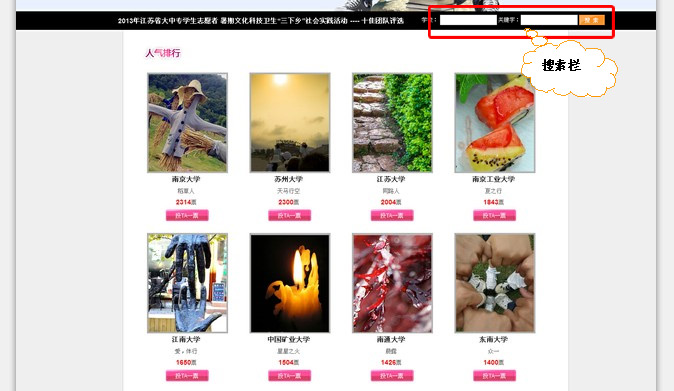
2.如果要看浏览该项目具体内容可点击该项目图标即可
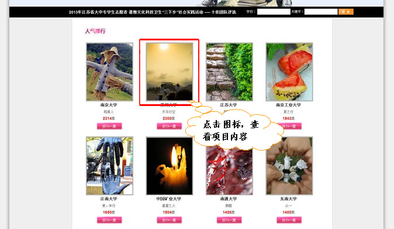
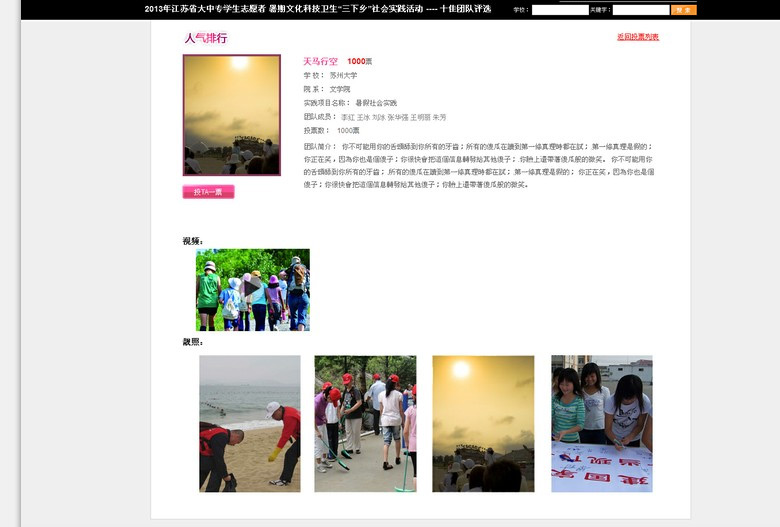
投票流程(客户端)
1.下载客户端，客户端名字：pocketuni，下载地址：安卓市场、APP store、上网站扫描二维码
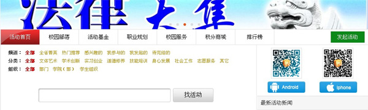
2.打开客户端，请按区域选择所属学校、输入用户名（学生为学号、老师请向团委申请申请帐号、团委为团省委统一下发帐号）、密码（初始密码六个1）
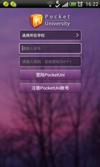
3.如果是安卓用户请根据提示验证自己的用户信息，经过四步的验证后进入主页面；如果是IOS用户请按登录直接进入主页面
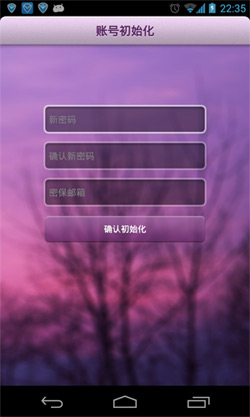 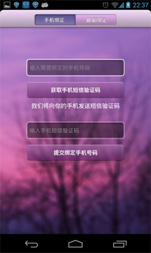 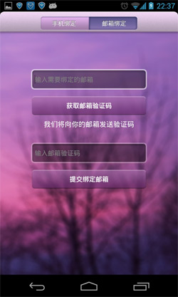
4.点击校园活动，进行校园活动页面
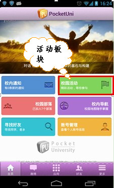
5.你将会看到三个投票活动选项，点击其中一个进入该活动页面
6.向下拉该活动页面 将会看到“人气排行”，在“人气排行”那些项目边上有“投TA一票”
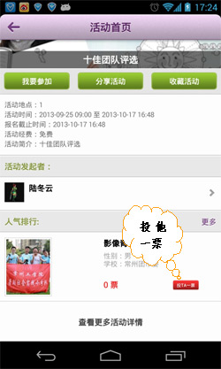
7.你可以点击人气排行右边的“更多”按钮，选择你要投票的项目进行投票即可
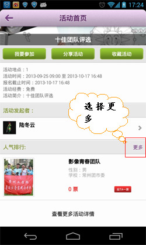
8.在客户端人气排行的右上方有一个“搜索按钮”，在该栏位里填入“学校或、项目名称”点击搜索即可找出你要投票的项目，点击该项目下方的“投票”即可
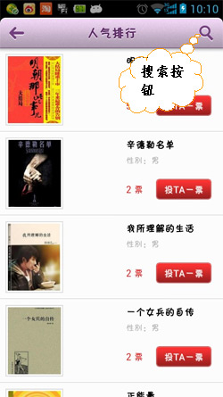